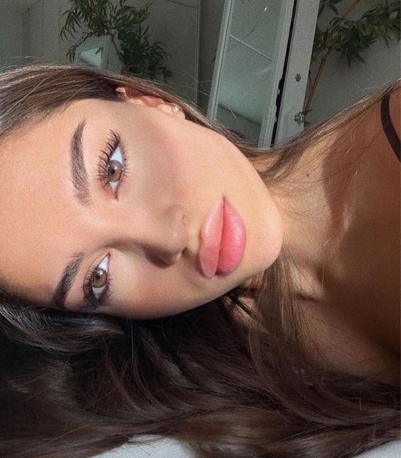
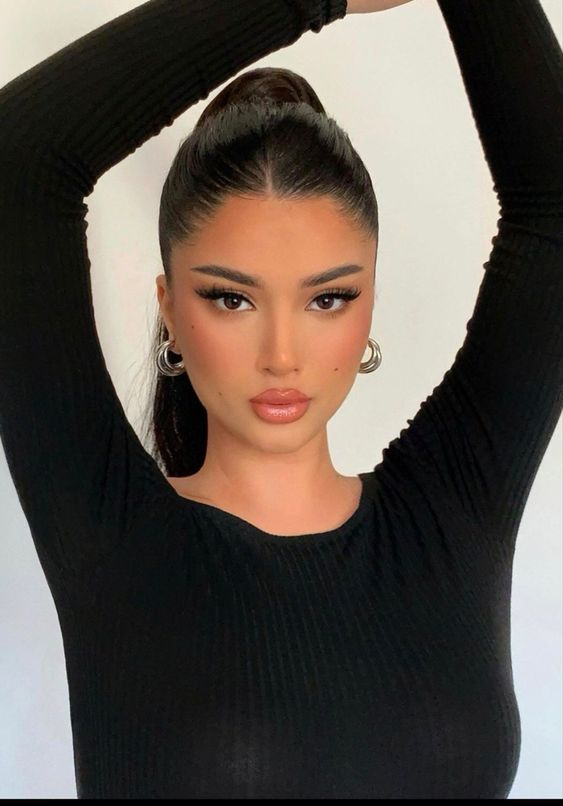
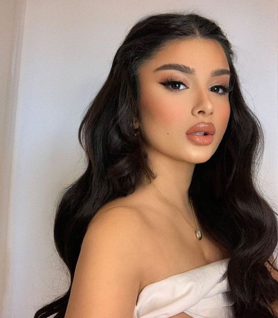
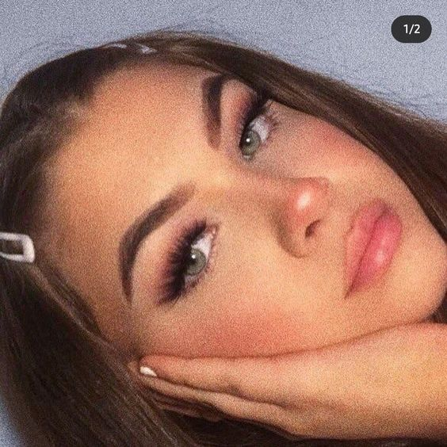

|  | This look is quite natural with a pop of color on the lips and cheeks. She keeps her skin looking relatively natural and uses quite a bit of mascara to enhance the eyes. I really like the full, pink lips that she has done with what seems like lip tint on the center of the lips. She also extends the inner corner of her eyes with a little bit of dark brown eyeshadow. |
|  | This look is simple, yet sophisticated. She enhances her eyes with a flared out false eyelashes and a bit of a cat eye eyeliner look. She has neat eyebrows and pairs this look with a lot of blush and a nude and glossy lip. This look pairs extremely well with the slicked back hair to complete the put together look. |
|  | This look reminds me a lot of what Ariana Grande usually has on. Similar to the other makeup looks, she has winged out eyeliner with natural, flared out falsies. She enhances her lips by overlining her lips with a nude lipliner and topping it off with lip gloss. She uses a bronzey blush and a pop of peachy blush on the apples of her cheeks for that perfect sunkissed glow. This look is actually perfect for bridal looks. |
|  | This look is definitely TikTok inspired, with the cute makeup look. She has on lots of pinky-peachy blush on her cheeks and on the tip of her nose. She has dramatic falsies osn her eyes along with some peachy pinky eyeshadow on her lids. She keeps this look relatively monochromatic with the similar peach pink color on her eyes, lips and cheeks. She has quite a lot of highlighter on hthe tip of her nose along with a hint of bronzer to make her look more sunkissed. |